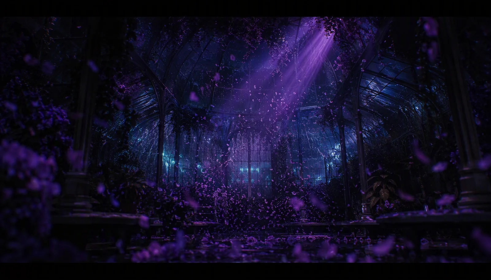
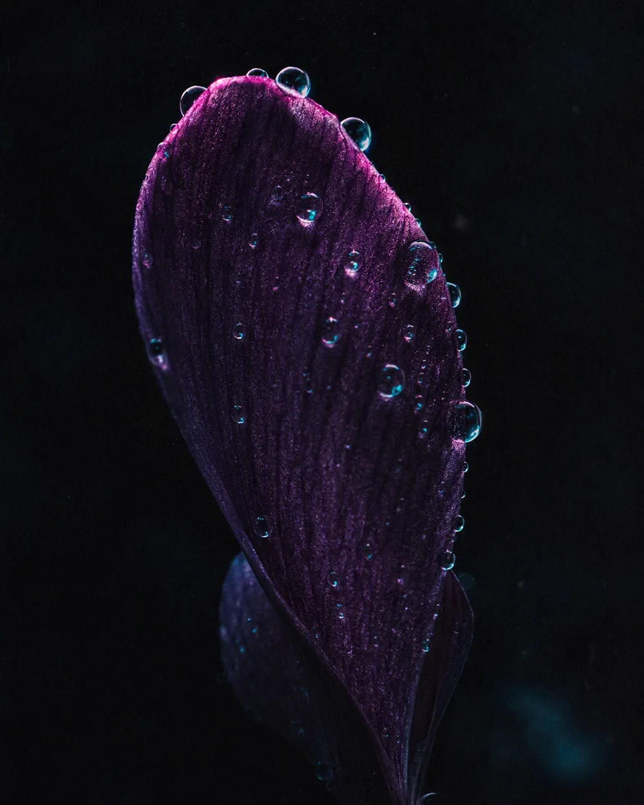

柔光
晨雾与暮色之间的那一抹紫。光线不刺眼，却足以照亮每一页笔记。
光线的三条法则
晨雾与暮色之间的那一抹紫。光线不刺眼，却足以照亮每一页笔记。
光标不是装饰，是风。靠近时花瓣退让，静止时它们回到呼吸的轨道。
灵感不必宏大。一句观察、一次调试、一场雨后的散步，都可以成为笔记。
Matter.js · Constraints
巨型标题是坚硬的地面。花瓣服从重力——拖拽、抛掷、滚动施力。这是温室里唯一允许失控的地方。
// https://brm.io/matter-js/demo/#constraints — 本页即按此逐参数运行
var Engine = Matter.Engine,
Render = Matter.Render,
Runner = Matter.Runner,
Composite = Matter.Composite,
Constraint = Matter.Constraint,
MouseConstraint = Matter.MouseConstraint,
Mouse = Matter.Mouse,
Bodies = Matter.Bodies;
var engine = Engine.create(),
world = engine.world;
var render = Render.create({
element: document.body,
engine: engine,
options: { width: 800, height: 600, showAngleIndicator: true }
});
Render.run(render);
var runner = Runner.create();
Runner.run(runner, engine);
// —— ① stiff global anchor
var body = Bodies.polygon(150, 200, 5, 30),
constraint = Constraint.create({ pointA: { x: 150, y: 100 }, bodyB: body, pointB: { x: -10, y: -10 } });
Composite.add(world, [body, constraint]);
// —— ② soft global anchor
body = Bodies.polygon(280, 100, 3, 30);
constraint = Constraint.create({ pointA: { x: 280, y: 120 }, bodyB: body, pointB: { x: -10, y: -7 }, stiffness: 0.001 });
Composite.add(world, [body, constraint]);
// —— ③ damped soft global anchor
body = Bodies.polygon(400, 100, 4, 30);
constraint = Constraint.create({ pointA: { x: 400, y: 120 }, bodyB: body, pointB: { x: -10, y: -10 }, stiffness: 0.001, damping: 0.05 });
Composite.add(world, [body, constraint]);
// —— ④ revolute single
body = Bodies.rectangle(600, 200, 200, 20);
var ball = Bodies.circle(550, 150, 20);
constraint = Constraint.create({ pointA: { x: 600, y: 200 }, bodyB: body, length: 0 });
Composite.add(world, [body, ball, constraint]);
// —— ⑤ revolute multi
body = Bodies.rectangle(500, 400, 100, 20, { collisionFilter: { group: -1 } });
ball = Bodies.circle(600, 400, 20, { collisionFilter: { group: -1 } });
constraint = Constraint.create({ bodyA: body, bodyB: ball });
Composite.add(world, [body, ball, constraint]);
// —— ⑥ stiff multi
var a = Bodies.polygon(100, 400, 6, 20),
b = Bodies.polygon(200, 400, 1, 50);
constraint = Constraint.create({ bodyA: a, pointA: { x: -10, y: -10 }, bodyB: b, pointB: { x: -10, y: -10 } });
Composite.add(world, [a, b, constraint]);
// —— ⑦ soft multi
a = Bodies.polygon(300, 400, 4, 20);
b = Bodies.polygon(400, 400, 3, 30);
constraint = Constraint.create({ bodyA: a, pointA: { x: -10, y: -10 }, bodyB: b, pointB: { x: -10, y: -7 }, stiffness: 0.001 });
Composite.add(world, [a, b, constraint]);
// —— ⑧ damped soft multi
a = Bodies.polygon(500, 400, 6, 30);
b = Bodies.polygon(600, 400, 7, 60);
constraint = Constraint.create({ bodyA: a, pointA: { x: -10, y: -10 }, bodyB: b, pointB: { x: -10, y: -10 }, stiffness: 0.001, damping: 0.1 });
Composite.add(world, [a, b, constraint]);
// 四面静态墙
Composite.add(world, [
Bodies.rectangle(400, 0, 800, 50, { isStatic: true }),
Bodies.rectangle(400, 600, 800, 50, { isStatic: true }),
Bodies.rectangle(800, 300, 50, 600, { isStatic: true }),
Bodies.rectangle(0, 300, 50, 600, { isStatic: true })
]);
var mouse = Mouse.create(render.canvas),
mouseConstraint = MouseConstraint.create(engine, {
mouse: mouse,
constraint: { angularStiffness: 0, render: { visible: false } }
});
Composite.add(world, mouseConstraint);
render.mouse = mouse;
Render.lookAt(render, { min: { x: 0, y: 0 }, max: { x: 800, y: 600 } });
拖拽 · 滚动 · 点击
Selected Works · Grown in this garden

黑暗，是这座温室最深的底色
Lumen Bloom · interactive 3D specimen
React Bits · Animations, studied & ported
<Spotlight />
光标扫过之处，聚光灯点亮句子——逐词对焦、景深虚化。
<GlareHover />
悬停这张卡：3D 倾随指针，斜向高光扫过表面。
<ClickSpark />
在页面任意处点击——八角星芒自指尖绽开。全站已生效。
<PixelTransition />

像素马赛克在视口内逐格溶解成照片。
<Magnet />
磁吸：指针靠近时元素被牵引，松手弹回。
<SplashCursor / 风场光标>
首屏 WebGL 花瓣场即同款思路：光标=风，点击=冲击波，全站常驻。
<AnimatedCounter />
入视口起跳的数字滚动，缓出收敛。
<MagnetLines />
阵列线条实时转向指针——官方同款角度公式，加了 rect 缓存、rAF 节流与离屏暂停。
<AnimatedContent />
这张卡本体就是 AnimatedContent：位移 + 缩放 + 透明度，ScrollTrigger 单次触发。
<DecryptedText />
入视口逐字解密——官方同字符集、同 50ms 步进。
<BlurText />
iridescence, physics and whitespace bloom together
逐词从模糊中落位：blur 10→5→0 两段关键帧。
<ShinyText />
GROWN IN THE DARK · SHINE WITHIN
渐变流光文字——纯 CSS background-position，零 JS 开销。
<RotatingText />
字符级轮播进出场，离屏与后台自动暂停。
<GlitchText />
悬停触发 RGB 撕裂——官方同款 clip-path 关键帧，纯 CSS。
<GradientText />
三色渐变流动文字——background-clip: text + 位移循环。
<TextType />
打字机循环：输入·停顿·删除·换句，光标呼吸闪烁。
<CircularText />
环形旋转字：悬停 4 倍速，离屏与后台自动暂停。
<DotGrid />
点阵近距辉光 + 快速划过推动 + 点击冲击波——付费 InertiaPlugin 以弹性回弹等价替代。
<Silk / 丝绸着色器>
Backgrounds 类目首个移植：官方 GLSL 原样，three.js 正交平面渲染，离屏停 rAF。
<Lottie · Violet Bloom />
text-to-lottie 技能产出：90 帧无缝呼吸绽放，官方 Skottie 播放器逐帧验证，离屏自动暂停。
<ScrambledText />
光在字母间重新解码
官方 SplitText + ScrambleTextPlugin（现已免费）逐字移植——光标靠近，字符在半径内重新解码。
<SplitFlapText />
机场翻牌屏：官方双面翻牌状态机逐行移植，每字符 8 次随机翻动 + 逐列错峰。
<FloatingLines / 浮动光线>
Backgrounds 第二批：官方 GLSL 原样三层波带，光标弯曲光线，离开后惯性回位。
<SoftAurora / 柔性极光>
官方 ogl 版以 three.js 等价移植：3 倍频 Perlin 光带 + 余弦渐变，鼠标牵引光幕漂移。
<CountUp / 弹簧数字>
官方 motion useSpring 公式等价移植：阻尼弹簧积分滚动，落定即停 rAF，零空转。
<TextPressure / 压力字重>
Roboto Flex 可变字体已本地化：光标所到之处，字重 100→900、宽度 5→200 被"压"出来。
<Shuffle / 洗牌入场>
花开有时
官方字符条带洗牌移植（SplitText）：奇偶错峰滚入，随机字符垫层，悬停可再洗一次。
<TextLoop / 波纹字带>
官方 SVG textPath 双头环绕状态机：正弦字带上首尾相衔，滚过接缝无缝续字。
<Beams / 光柱>
官方 r3f 版以 vanilla three.js 等价移植：Physical ShaderLib 注入 cnoise 顶点位移，12 束光柱明暗流动。
<RippleGrid / 涟漪网格>
官方 ogl 版 three.js 等价移植：中心脉冲涟漪网格 + 鼠标高斯影响场，指下生波。
<Aurora / 极光幕>
官方 ogl GLSL3 极光着色器原样移植：simplex 噪声山脊横扫，三色品牌渐变带。
<Plasma / 等离子体>
官方 Shadertoy 式步进积分场：降采样渲染 + CSS 拉伸，性能与质感兼得。
<FuzzyText / 静电噪点字>
官方逐行随机位移算法原样移植：静置微颤，悬停静电风暴加剧。
<ScrollVelocity / 滚动变速字带>
官方 motion 弹簧变速移植：滚动速度注入字带，反向滚动即反向流淌。
<TextCursor / 星芒尾迹>
在此区域内移动指针
官方轨迹采样算法：按间距落点、随向旋转、驻留后逐颗消隐。
<VariableProximity / 近距字重场>
光标半径内逐字插值可变轴，高斯衰减；静止后 rAF 自动休眠。
<FallingText / 落词物理>
官方 matter-js 词粒物理原样移植：入屏起坠、弹性碰撞，词块可直接拖拽把玩。
<EchoText / 残影回声>
官方逐层插值回声：指针牵引字形分层散开，静止后自动收束休眠。
<FoldText / 折纸展开>
官方 3D 铰链折字：每字沿底边绕 X 轴翻折入场，折痕阴影随角度衰减。
<ScrollFloat / 滚动浮字>
官方 scrub 逐字上浮：字符随滚动进度从折痕中拉伸浮现。
<Galaxy / 星野>
官方 ogl GLSL 星野 three.js 等价移植：四层视差星海、鼠标斥力推开星尘，明暗主题双渲染。
<PixelBlast / 像素迸发>
官方 FBM + Bayer 抖动像素场：点击激发同心涟漪，方/圆/三角/菱多形状掩码。
<CurvedLoop / 曲线环带>
官方 SVG textPath 曲线跑马灯：贝塞尔弧上无缝环流，可直接拖拽改变流向。
<DepthText / 纵深挤出>
官方 64 层 translateZ 挤出字：鼠标牵引 3D 倾斜，静置时缓慢自转。
<MaskedHeading / 影像题字>
官方字形剪切影像标题：字内流动真实照片，指针视差 + 缓慢漂移，入屏逐词升起。
<ParticleText / 粒子聚字>
官方画布采样聚字：数千粒子从四散到聚拢成字，光标斥力拨开星尘。
<ScrollReveal / 滚动词显>
官方 GSAP scrub 逐词显影：整行随滚动回正，词块从模糊与低透明度中浮出。
<StrokeText / 描边书写>
官方 SVG 笔画描摹：悬停即逐字书写轮廓，随后色彩擦除式填充。
<WarpText / 折射扭曲>
官方 ogl 色散折射场 three.js 等价移植：指针化作透镜，文字随 FBM 介质弯折。
<CRTWarp / CRT 等离子屏>
官方 CRT 曲面等离子屏 GLSL 逐行原样：80×24 像素量化波纹、八向辉光与 RGB 错位，鼠标即屏幕曲率。
<Grainient / 颗粒渐变场>
官方 GLSL3 颗粒渐变场逐行原样：Perlin 旋转 + 正弦翘曲 + 电影颗粒，亮色主题自动切换墨水混色。
<Iridescence / 虹彩干涉>
官方八重余弦干涉场 GLSL 原样：指针推动光程差，紫罗兰虹彩随视线流动。
<LiquidChrome / 液态铬面>
官方九采样抗锯齿液态场 GLSL 原样：正弦折射的紫色金属液面，指针激起涟漪。
<Lightning / 闪电裂界>
官方 raw WebGL 十分频 FBM 闪电原样：噪声撕开夜空，紫色电弧沿裂缝放电。
<Particles / 星尘粒子>
官方 vertex 着色器球状粒子云原样：每颗星携带随机相位，悬停即推开星尘。
<GridMotion / 视差瓷砖>
官方四行反向惯性视差原样：鼠标牵引 15° 倾斜瓷砖流，图像与字体砖交错呼吸。
<Waves / 游动波纹>
官方 Perlin 线阵 + 弹簧-摩擦光标扰动逐行原样：一千多个质点在波面下缓慢洄游。
<Orb / 呼吸光球>
官方 simplex 噪声光球原样：色带沿边缘轮转，悬停时球面泛起涟漪并缓缓自转。
<LightPillar / 体积光柱>
官方光线行军积分体积光：噪声域沿柱身流动，暗处开出紫蓝的花。
<Balatro / 卡牌漩涡>
官方扑克底纹 fractal 场原样：五次迭代折叠出迷幻矿物纹理，鼠标横扫即改变流速。
<GhostFibers / 幽灵纤维>
官方多层极坐标扭曲纤维原样：夜光菌丝般的辉光在暗场中缓慢蔓延，两主题均保持深空底色。
<Scanner / 信号扫描>
官方 RGB 三分离扫描带原样：正弦信号场扰动波带，光标靠近处泛起涟漪放大。
<Topography / 等高线地貌>
官方四组贝塞尔相位场原样：等高线如地形般缓慢形变，鼠标是一枚抬起地面的热力。
<DotField / 点阵隆起>
官方 bulge 物理原样：千颗静默光点，光标掠过时如水面鼓包般让路。
<LightRays / 神圣光束>
官方双层 god-ray 原样：光自顶端倾泻，鼠标是一阵可以让光束偏航的风。
<PlasmaWave / 等离子波>
官方光线行军双管等离子：两条管道在深处扭绞，等值面在暗处灼出青紫的电弧。
<GradientBlinds / 百叶渐变>
官方百叶揭示场原样：光标是一盏聚灯，叶片开合之间把渐变色一条条漏出来。
<DarkVeil / 暗幕神经场>
官方 CPPN 神经网络场原样：八层 sigmoid 在像素里显影出流动的墨紫帷幕。
<EvilEye / 邪眼>
官方极坐标火焰眼原样：瞳孔随光标转动，虹膜由八倍频 fBm 噪声缓缓燃烧。
<LineWaves / 线波干涉>
官方位移场脊线干涉原样：两组正弦位移场彼此混叠，细线在斜 45° 上呼吸起伏。
<PixelSnow / 像素雪场>
官方体素雪景步进原样：128 层格阵行军，每片六角雪花按深度渐隐。
<SideRays / 侧射光>
官方角源双色射线原样：金紫两束自右上角倾泻，衰减与饱和度皆可拧动。
<LiquidEther / 液态以太>
官方 Navier–Stokes 全通量管线原样：平流（BFECC）、黏性、32 轮 Poisson 压力投影逐 FBO 迭代，光标推开一池发光墨水。
<MoltenMetal / 熔金>
官方八重折叠迭代场原样：复平面上的扭曲映射逐层燃烧，紫金熔流随呼吸缓缓旋搅。
<PrismaticBurst / 棱镜爆发>
官方 44 步光线行军原样：三维旋转的折射星芒沿六梳射线裂解光谱，边缘以分层噪声淡出。
<LightTunnel / 光导隧道>
官方对数深度光纤束原样：24 根波状缆线自隧道深处涌出，数据脉冲沿各自随机相位逐节点亮。
<Ferrofluid / 磁流体>
官方 SDF 域扭曲原样：三层柏林噪声把液滴拉成尖刺，光标经过处磁场上涌、 shimmer 折光流转。
<ColorBends / 色带弯折>
官方三维环带弯折原样：四条色带沿周期轨道互相绕转，带宽与 warp 噪声皆按官方公式复现。
<Threads / 丝流>
官方 40 行柏林丝流原样：40 条曲线沿噪声场摆动，光标如指腹划过丝束激起涟漪。
<GridDistortion / 网格畸变>
官方 Float 数据纹理形变原样：15×15 随机位移场随光标鼓动、以松弛系数回落，把画作推成一块抖动的玻璃。
<SlicedWaves / 切片波>
官方 GLSL300es 原样：14×8 栅格切片各持一条正弦游标，光标经过处波幅被指尖点亮。
<GradientWaves / 梯度涌浪>
官方 plasma raymarch 原样：128 步步进的海面在雾深里推远，浪脊取色于紫罗兰到品红的梯度。
<Lightfall / 落星光>
官方 Shadertoy 移植原样：39 步球面行进的虫洞视角，星迹沿螺旋角环坠落、随光标泛出晕团。
<WebThreads / 光丝>
官方 GLSL300es 原样：6 条相位错开的丝在 SDF 辉光里交缠，pinch 点被光标牵引左右偏摆。
<FaultyTerminal / 故障终端>
官方 fbm 数字雨原样：三 octave 噪声驱动点阵明灭，扫描线、弯管畸变与入场逐格点亮一并复刻。
<LetterGlitch / 字母故障>
官方矩阵字符原样：每 50ms 抽 5% 字符换形换色，色彩在数值空间平滑过渡，边缘渐隐入暗场。
<ShapeGrid / 形格>
官方蜂窝网格原样：六边形沿 x 缓滚，光标划过点亮一格并留下按透明度衰减的拖尾。
<Ballpit / 物理球阵>
官方球池物理原样：清漆金属球互相挤推、坠地回弹，头球由光标经射线牵引，环境反射换成品牌紫摄影棚。
<Radar / 雷达环扫>
官方 <Radar /> 逐行移植:同心环相位 + 辐条弧距 + sin 扫掠波瓣,指针 0.05 平滑偏移,浅色主题走官方墨色映射。
<Dither / 复古抖动波>
官方 <Dither /> 等价复刻:Perlin FBM 波场先写入离屏纹理,再经 Bayer 8x8 ordered dither 合成——官方 postprocessing 通道改原生 WebGL2 双 pass,GLSL 逐行保留。
在最安静的时刻
轻轻盛开
LUMEN VIOLA 不追逐喧闹。它邀请你放慢一拍——看清虹彩、物理与留白如何共同完成一场小型演出。
Field Notes
把界面做成一座会呼吸的温室：
— LUMEN VIOLA · 设计备忘
留白是空地，动效是微风，物理是真实的重量。
全站几乎单色紫。唯一的青只出现在光标与 HUD——破局点克制到一次就够。
每一次出现都回答一个问题：用户该看向哪里？少了干扰，多了叙事。
整页只留一处「失控」——物理花园。花瓣砸在标题上，比任何形容词都诚实。